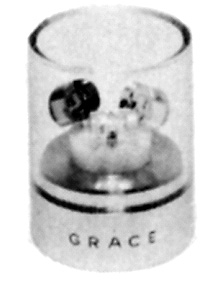
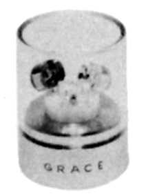
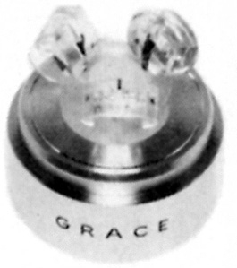
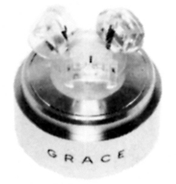
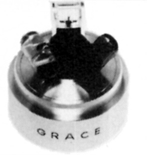
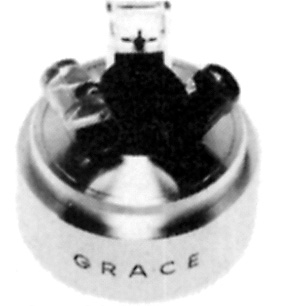

交換針セット
交換針の互換性確保によるバリエーションを展開していたメーカーであった為、
複数の交換針をセットにしたものが存在する。全容は不明だが、管理人手元資
料にあったのは以下のようなもの。どれも1970年代中盤〜後半の商品である。
F-8用セット
S8-CML

■価格 19,500円
■備考 RS-8C(9,750円)、RS-8M(8,750円)、RS-8L(7,750円)相当品のセット
つまりF-8系のボディでF-8C、F-8M、F-8Lが楽しめるセットである。
単品購入より25%ほどお得。
S8-ECL

■価格 21,500円
■備考 RS-8E(10,750円)、RS-8C(9,750円)、RS-8L(7,750円)相当品のセット
つまりF-8系のボディでF-8E、F-8C、F-8Lが楽しめるセットである。
単品購入より25%ほどお得。
S8-CML'10

■価格 22,000円
■備考 RS-8C(9,750円)、RS-8M(8,750円)、RS-L'10(9,000円)相当品のセット
つまりF-8系のボディでF-8C、F-8M、F-8L'10が楽しめるセットである。
S8-CMLの後継商品。
S8-ECL'10

■価格 24,000円
■備考 RS-8E(10,750円)、RS-8C(9,750円)、RS-L'10(9,000円)相当品のセット
つまりF-8系のボディでF-8E、F-8C、F-8L'10が楽しめるセットである。
S8-ECLの後継商品。
F-9用セット
S9-ELU

■価格 24,500円
■備考 RS-9E(11,500円)、RS-9L(9,500円)、RS-9U(9,000円)相当品のセット
つまりF-9系のボディでF-9E、F-9L、F-9Uが楽しめるセットである。
S9-FLD

■価格 25,500円
■備考 RS-9F(12,500円)、RS-9L(9,500円)、RS-9D(9,000円)相当品のセット
つまりF-9系のボディでF-9F、F-9L、F-9Dが楽しめるセットである。
グレースのインデックスへ